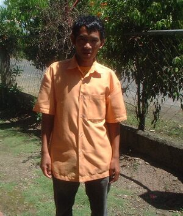

inu 
/ʔinu/
v_rt.
“marvel”
vi.
for someone (egkeinu-inu, neinu-inu, experiencer, egkA><ø-rdpRT-) to be astonished at something (igkeinu-inu, ingkeinu-inu, reason, ig–rdpCV-)
Egkeinu-inu a te kuntee ne timpu su me malitan e ka eggun-a te me lukes.
I'm astonished now-a-days because women lead men.
Eng. astonished; surprised; amazed; astounded
Tag. nabiglâ; nagúlat
Ceb. nakurat
Ilo.: nasda-aw
OCM: Drivers and Emotions (152)
DDP: Surprise (3.4.1.3)
Online dict status: -
Usage level: M
v.
for something (egpekeinu-inu, nekeinu-inu, agent, egpAkA-rdpRT-) to astonish someone, or to be the thing (igpekeinu-inu, impekeinu-inu, reason, igpapaN-) which astonishes someone
Nekeinu-inu a te bayaku su mania te kenè egpakalayang, kunaleg te napalian bes ka pakpak.
Iyan igpekeinu-inu keddì su mania te migseled sikandin te gumawan ne migsinehew?
Eng. astonished
Online dict status: -
Usage level: M
v.
for someone (eg-inu-inu, mig-inu-inu/in-inu-inu, inu-inu, agent, eg><ø-rdpRT-) to express amazement about something (ig-inu-inu, in-inu-inu, reason, ig-rdpRT-)
Kenè kew eg-inu-inu te balitì su egsaheinuwen kew te busew.
In-inu-inu rin ka balitì sikan naa ka migderalu sikandin.
Eng. amazement
Online dict status: -
Usage level: M
n.
(kein-inuwan, kA><an-rdpCVC-) a miracle or other astonishing event or thing
Kein-inuwan ka kuddè ku su warè ikug.
My horse is an oddity because it has no tail.
cf. salebu
Eng. miracle; astonishing; marvelous; mysterious; extraordinary; wonderful; amazing; surprising; odd; unique
DDP: Surprise (3.4.1.3)
Online dict status: -
Usage level: M
adj.
(mekeinu-inu, mAkA-rdpRT-) amazing
Mekeinu-inu iya ka kalamag su kenè egkakita.
Wind is indeed amazing because we cannot see it.
Eng. amazing; wondrous; wonderful
DDP: Surprise (3.4.1.3)
Online dict status: -
Usage level: R
Updated by: RJH,RJH,AAA,RJH,TME,NJK,QDL,QDL,NJK,NJK,AAA,RAA,RJH
Last updated: 10/Mar/2014
"eg-in-inuwen" in text "Morning Darkness"
"keinu-inu" in healthbook "Migpamawian ni Inuk ka sumbaley rin ne migpangaliskis"
"Neinu-inu" in healthbook "Anak ni Biltu ne migkerid"
"neinu-inu" in healthbook "Anak ni Biltu ne migkerid"
"neinu-inu" in healthbook "Egkehangen si Wanitu"
"neinu-inu" in healthbook "Egmenuwen taa teg bawi kag lusungan"
"Kein-inuwan" in song "Langesa rin ne mahal"
"Kein-inuwan" in song "Langesa rin ne mahal"
"kein-inuwan" in song "Manama ka keupiyanan te langun"
This page last updated: 28-Dec-2019
Copyright © 2009-2014, Matigsalug Language Christian Association, Inc